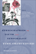

|
Race and Class Matters at an Elite College
Aries, Elizabeth
246 pp • 6x9 • Fall 2008
paper 978-1-59213-726-8
cloth 978-1-59213-725-1
|
 |
Speaking of Race and Class
The Student Experience at an Elite College
Aries, Elizabeth, with Richard Berman 238 pp • 6x9 • Fall
2012
paper 978-1-4399-0967-6
cloth 978-1-4399-0966-9 |
 |
The Art of Play
Recess and the Practice of Invention
Beresin, Anna R.
202 pp • 6x9 • Fall 2013
paper 978-1-4399-1094-8
cloth 978-1-4399-1093-1
|

|
Consuming Work
Youth Labor in America
Besen-Cassino, Yasemin
202 pp • 6x9 • Fall 2013
paper 978-1-4399-0949-2
cloth 978-1-4399-0948-5 |

|
The Cost of Being a Girl
Working Teens and the Origins of the Gender Wage Gap
Besen-Cassino, Yasemin
238 pp • 6x9 • Fall 2017
paper 978-1-4399-1349-9
cloth 978-1-4399-1348-2 |
 |
Law
and Order and School
Daily Life in an Educational Program for Juvenile Delinquents
Birnbaum, Shira 208 pp • 5.5x8.25 •
Spring 2001
paper 978-1-56639-870-1
cloth 978-1-56639-869-5
|
 |
Children
in the Field
Anthropological Experiences
edited by Cassell, Joan 288 pp • Fall
1987
paper 978-1-56639-206-8
cloth 978-0-87722-477-8 |

|
Judging
Children as Children
A Proposal for a Juvenile
Justice System
Corriero, Michael A.
232 pp • 5.5x8.25 • Spring 2008
paper 978-1-59213-169-3
cloth 978-1-59213-168-6
|
|  |
Ethnographies of Youth and Temporality
Time Objectified
edited by Dalsgård, Anne Line, Martin Demant Frederiksen, Susanne Højlund and Lotte Meinert
Afterword by Michael Flaherty
206 pp • 6x9 • Fall 2013
cloth 978-1-4399-1066-5 |

|
Youth Violence
Sex and Race Differences in Offending, Victimization, and Gang Membership
Esbensen, Finn-Aage, Dana Peterson, Terrance J. Taylor and Adrienne Freng
244 pp • 6x9 • Fall 2010
paper 978-1-4399-0072-7
cloth 978-1-4399-0071-0
|
 |
Growing
Up with Television
Everyday Learning Among Young Adolescents
Fisherkeller, JoEllen 224 pp • 6x9 •
Spring 2002
paper 978-1-56639-953-1
cloth 978-1-56639-952-4
|

|
Young Men, Time, and Boredom in the Republic of Georgia
Frederiksen, Martin Demant
New in Paperback!
216 pp � 6x9 � Fall 2016
paper 978-1-4399-0919-5
cloth 978-1-4399-0918-8 |
 |
Revolution By Love
edited by Ghandour, Dala, Emna Ben Yedder, Mohammed Masbah and Steve Parks
194 pp • 5x7 • Spring 2014
cloth 978-0-98404-299-9 |
 |
A
World without Words
The Social Construction of Children Born Deaf and Blind
Goode, David, foreword by Irving Kenneth Zola 336
pp • 5.5x8.25 • Fall 1994
paper 978-1-56639-216-7
cloth 978-1-56639-215-0
|
 |
Coming of Age in Buffalo
Youth and Authority in the Postwar Era
Graebner, William 200
pp • Fall 1989
paper 978-1-56639-197-9
cloth 978-0-87722-629-1 |
 |
Swimming Against the Tide
African American Girls and Science Education
Hanson,
Sandra L.
224 pp • 5.5x8.25 • Fall 2008
paper 978-1-59213-622-3
cloth 978-1-59213-621-6
|

|
Teen
Mothers and the Revolving Welfare Door
Harris, Kathleen Mullan, foreword by Frank F. Furstenberg,
Jr.
224 pp • 5.5x8.25 • Fall 1996
cloth 978-1-56639-499-4 |
 |
Telling Young Lives
Portraits of Global Youth
edited by Jeffrey, Craig, and Jane Dyson
232 pp • 6x9 • Fall 2008
paper 978-1-59213-931-6
cloth 978-1-59213-930-9
|
|
"We Live in the Shadow"
Inner-City Kids Tell Their Stories through Photographs
Kaplan, Elaine Bell
208 pp � 6x9 � Spring 2013
paper 978-1-43990-790-0
cloth 978-1-43990-789-4
|

|
Suicide Squeeze
Taylor Hooton, Rob Garibaldi, and the Fight against Teenage Steroid Abuse
Kashatus, William C.
256
pp • 6x9 • Fall 2016
cloth 978-1-4399-1438-0 |
|
A Midwestern Mosaic
Immigration and Political Socialization in Rural America
Lay, J. Celeste
238 pp • 6x9 • Spring 2012
paper 978-1-4399-0793-1
cloth 978-1-4399-0792-4
|

|
Young
Unwed Fathers
Changing Roles and Emerging Policies
edited by Lerman, Robert I. and Theodora J. Ooms
360 pp • 6x9 • Spring 1993
paper 978-1-56639-318-8
cloth 978-1-56639-048-4
|
 |
Time
to Care
Redesigning Child Care to Promote Education, Support Families,
and Build Communities
Lombardi, Joan 248 pp • 6x9 • Fall
2002
paper 978-1-59213-009-2
cloth 978-1-59213-008-5
|

|
Hope Is Cut
Youth, Unemployment, and the Future in Urban Ethiopia
Mains, Daniel
208 pp • 6x9 • Fall 2011
paper 1-4399-0480-4
EAN 978-1-4399-0480-0
cloth 1-4399-0479-0
EAN 978-1-4399-0479-4
|
|
Bullying
The Social Destruction of Self
Martocci, Laura
220 pp • 6x9 • Fall 2014
paper 978-1-43991-073-3
cloth 978-1-43991-072-6
|
|
Going
Down to the Barrio
Homeboys and Homegirls in Change
Moore, Joan W.
200 pp • Fall 1991
paper 978-0-87722-855-4
cloth 978-0-87722-854-7
|
 |
Cheap
Amusements
Working Women and Leisure in Turn-of-the-Century New York
Peiss, Kathy 288 pp • 5.5x8.25 •
1985
paper 978-0-87722-500-3
|
 |
Celebrating Debutantes and Quinceañeras
Coming of Age in American Ethnic Communities
Rodriguez, Evelyn Ibatan
226 pp � 6x9 � Spring 2013
paper 978-1-4399-0628-6
cloth 978-1-4399-0627-9 |
 |
In a Queer Voice
Journeys of Resilience from Adolescence to Adulthood
Sadowski, Michael, foreword by Carol Gilligan
206 pp • 6x9 • Fall 2012
paper 978-1-4399-0802-0
cloth 978-1-4399-0801-3 |

|
Laotian Daughters
Working toward Community, Belonging, and Environmental Justice
Shah, Bindi V.
216 pp • 6x9 • Fall 2011
paper 978-1-4399-0815-0
cloth 978-1-4399-0813-6
|
 |
Studies in Philosophy for Children
Harry Stottlemeier's Discovery
edited by Sharp, Ann Margaret and Ronald F. Reed
268 pp � Fall 1991
paper 978-0-87722-873-8
cloth 978-0-87722-872-1 |
 |
Helping Out
Children's Labor in Ethnic Businesses
Song, Miri
247 pp • 5.5x8.25 • Spring 1999
paper 978-1-56639-709-4
cloth 978-1-56639-708-7
|
 |
Starting
Out
Class and Community in the Lives of Working-Class Youth
Steinitz, Victoria Anne and Ellen Rachel Solomon 248
pp • Fall 1986
paper 978-0-87722-620-8
cloth 978-0-87722-430-3
|
 |
Youth
at Work
The Unionized Fast-food and Grocery Workplace
Tannock, Stuart 264 pp • 6x9 • Spring
2001
paper 978-1-56639-854-1
cloth 978-1-56639-853-4
|

|
Multicultural Girlhood
Racism, Sexuality, and the Conflicted Spaces of American Education
Thomas, Mary E.
216 pp • 6x9 • Fall 2011
paper 978-1-4399-0732-0
cloth 978-1-4399-0731-3
|

|
Troubling Gender
Youth and Cumbia in Argentina's Music Scene
Vila, Pablo and Pablo Sem�n, contributions by Elo�sa Mart�n and Mar�a Julia Carozzi
230 pp • 6x9 • Fall 2011
paper 978-1-4399-0267-7
cloth 978-1-4399-0266-0
|

|
The Delinquent Girl
Zahn, Margaret A.
360 pp • 6x9 • Spring 2010
paper 978-1-59213-952-1
cloth 978-1-59213-951-4
|